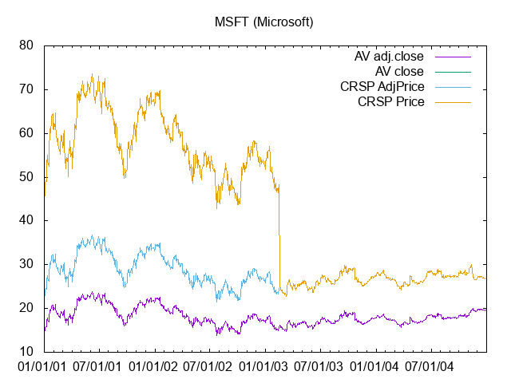

Download historical data using Alpha Vantage
Table of Contents
Introduction
Alpha Vantage provides free historical data for various financial time
series. This page is intended as a short introduction to download
series of stock price data. Check the company website for full API
documentation. In order to use their data retieval interface you need
to request a specific key called APIKEY. It can be requested for
free from this page.
UPDATE: The last S&P500 database of daily prices is available in the S&P 500 section below.
Tickers
The first problem is to identify the ticker symbol of the desired securities. The ticker symbol is an unique string that identifies each security. A global selection of tickers is available as an Excel file from investexcel.
For the New York stock exchange (NYSE), the updated list of tickers can be automatically downloaded in CSV format using
wget 'http://old.nasdaq.com/screening/companies-by-name.aspx?letter=0&exchange=nyse&render=download'
I use wget but one can directly past the URL in the adress bar of
any browser. Replace nyse with nasdaq to obtain the list of
security traded on NASDAQ. The obtained file lists:
- the ticker symbol
- the name of the company
- the price of the last transaction
- the market capitalization,
- the IPO year
- the Sector as defined by the stock exchange,
- the Industry, a further division of the Sectors
- the link to company page on the stock exchange website
You can take the sample lists I download October 28, 2019 for NYSE and NASDAQ. Another useful list of tickers are those of companies that compose the S&P 500 (as of January 12, 2020). This can be for instance obtained from datahub.
Obtaining historical data
Once the ticker of the interesting security is know, the data can be
downloaded using the Alpha Vantage interface from the base URL
https://www.alphavantage.co/query? followed by a list of name=value
pairs separated by & that specify what you want to download. The
pairs are:
- symbol
- The ticker of the stock
- function
- It can be
TIME_SERIES_DAILYfor daily prices,TIME_SERIES_WEEKLYfor weekly prices orTIME_SERIES_MONTHLYfor monlty prices. Adding_ADJUSTEDto the time series specification provided adjusted prices - apikey
- Use your key
- datatype
- It can be
JASON(default) orCSV - outputsize
compact(default) returns the last 100 data point.fullreturns the entire history, around 20 years.
For instance, to obtain the daily prices of General Eletricks (GE) in CSV format and save them in a file called "GE.csv" use
wget --output-document=GE.csv "https://www.alphavantage.co/query?function=TIME_SERIES_DAILY&outputsize=full&symbol=GE&apikey=[APIKEY]&datatype=csv"
where [APIKEY] is your personal API key. I use wget because I find
it more convenient to use inside script, but you can just cut and
paste the URL inside a web browser. The data in GE.csv contain the
following comma separated fields:
- Date
- Open
- High
- Low
- Close
- Volume
Using TIME_SERIES_DAILY_ADJUSTED as a function one gets instead:
- Date
- Open
- High
- Low
- Close
- Adjusted Close
- Volume
- Dividend Amount
- Split Coefficient
However, The 6th column, "Adjusted Close", seems to be problematic, see Caveat below. Also notice that the data retrieved from Alpha Vantage are in inverse temporal order: the last prices come first in the file.
Scripting
Often one wants to download data about several securities at once. For
instance, in order to download the price data at daily frequency for
all NYSE traded companies in the Pharmaceutical sector one can proceed
as follows (the commands below are intended to be issued in a Linux
terminal). First, obtain the list of traded comapnies and we save them
in the file companies.txt
wget --output-document=companies.txt http://old.nasdaq.com/screening/companies-by-name.aspx?letter=0&exchange=nyse&render=download;
Next, from the downloaded file, obtain the list of tickers of the
Technology sector and save them in the env variable tickers
tickers=$( gawk -F, '{ if($7=="\"Major Pharmaceuticals\""){ gsub(/"/,"",$1); print $1} }' companies.txt )
Finally, cycle over all tickers and download the price data.
Presently, you can perform up to 5 requests per minute and 500
requests per day. So the script needs to sleep a bit between the
different requests
AVWEB="https://www.alphavantage.co/query?function=TIME_SERIES_DAILY_ADJUSTED&outputsize=full&apikey=[APIKEY]&datatype=csv" for ticker in $tickers; do wget --output-document=${ticker}.csv ${AVWEB}&symbol=${ticker} sleep 15s done
The procedure above is replicated in the example file.
Caveat
When using the TIME_SERIES_DAILY_ADJUSTED option the returned
quantities should be adjusted by split events. But this does not seem
always to be the case. The plot below shows the "close" and adjusted
close" price series obtained from Alpha Vantage, together with the
same series obtained from CRSP, for Microsoft, one of the most
capitalized companies trading on NYSE.

Figure 1: Comparing price time series from Alpha Vantage and CRSP
The time windows has been selected to show the only split occurred to
Microsoft shares in the period covered by Alpha Vantage data. As can
be seen, the regular price series from the the two databases, "AV
close" and "CRSP Price", are the same. You don't see the green line
because it is below the yellow one. On the other hand, the behavior of
the "adjusted price" from Alpha Vantage is strange. One would expect
the adjusted price to track the regular price after the last split
event. In fact the CRSP adjusted closing price does exactly that. The
Alpha Vantage adjusted closing remains instead below it. With other
stocks, however, I observed that the "price" columns 2-5 of the Alpha
Vantage data match the corresponding adjusted quantities obtained from
the CRSP database. In conclusion, the situation is uncertain:
sometimes Alpha Vantage seems to return un-adjusted quantities,
sometimes the adjusted ones. In general, I'd advise against using the
6th column of the data obtained with TIME_SERIES_DAILY_ADJUSTED. It
is better to build an adjusting factor using the "split coefficient"
provided by Alpha Vantage itself (column 9). Using gawk and a simple
script it is possible to obtain a transformed dataset
> gawk -F',' -f AV_adjust.awk GE.csv > GEadj.csv
Now the last column of the file GEadj.csv contains a scaling factor
that can be used to obtain adjusted quantities, prices, volume and
dividend, starting from the un-adjusted ones. Depending on the stock,
you have to use this column or not. In general, it is easy to see it
by just plotting the time series of the quantity of interest and
looking for abrupt and persistent jumps. If they are there, then the
quantity is probably un-adjusted and the scaling factor has to be
applied. Another possible source of troubles is however the
possibility that the database returns a false "split event". This can
be checked using, for instance, stocksplithistory website.
S&P 500
Using a simple script once can obtain the price history of the stocks composing the S&P 500 index. You can download an compressed file of the historical daily prices as of January, 12 2021. I already reverted the order of the lines and applied the script described in the Caveat section above. Files are named according to the ticker symbol of the company. They contains eight space separated columns:
- Date (yyyymmdd)
- Open
- High
- Low
- Close
- Volume
- Dividend Amount
- Price adjustment factor
For instance, to recover the adjusted closing price, multiply column 5 with column 8.